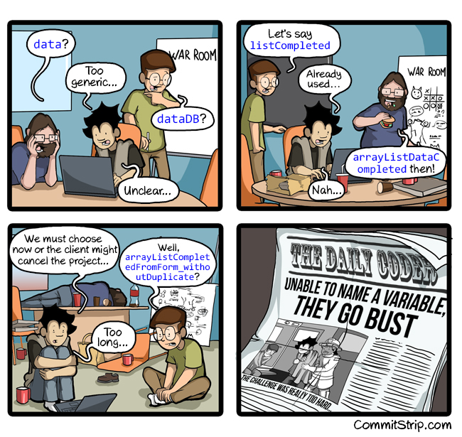

Introducción a Javascript¶

¿Qué es Javascript?¶
Cualquier página web de Internet está construída, como mínimo, por HTML (un lenguaje de marcas) y CSS (un lenguaje de estilos). El primero de ellos permite construir todo el marcado de la página (contenido e información) mediante etiquetas HTML y dotándo de semántica a la información mediante la naturaleza de dichas etiquetas. Posteriormente, el segundo de ellos permite darle estilo a la página y construir una interfaz visual más agradable para el usuario.
La separación bien marcada de estos dos pilares permite que si en algún momento necesitamos modificar la información (o el diseño) de la página, no tengamos también que lidiar con modificaciones en el otro.
Sin embargo, utilizar sólo y exclusivamente HTML y CSS en una página nos limita considerablemente. Si bien es cierto que con estos dos lenguajes podemos hacer un gran abanico de cosas, hay otras que serían totalmente imposibles, o al menos, mucho más fáciles de realizar si tuvieramos un lenguaje de programación a nuestra disposición. Y en este punto es donde aparece Javascript.
¿Qué es Javascript?¶
Javascript es un lenguaje de programación, o lo que es lo mismo, un mecanismo con el que podemos decirle a nuestro navegador que tareas debe realizar, en que orden y cuantas veces (por ejemplo).
Muchas de las tareas que realizamos con HTML y CSS se podrían realizar con Javascript. De hecho, es muy probable que al principio nos parezca que es mucho más complicado hacerlo con Javascript, y que por lo tanto no merece la pena. Sin embargo, con el tiempo veremos que Javascript nos ofrece una mayor flexibilidad y un abanico de posibilidades más grande, y que bien usadas, pueden ahorrarnos bastante tiempo.
Para comprenderlo, un ejemplo muy sencillo sería el siguiente:
<div class="item">
<p>Número: <span class="numero">1</span></p>
<p>Número: <span class="numero">2</span></p>
<p>Número: <span class="numero">3</span></p>
<p>Número: <span class="numero">4</span></p>
<p>Número: <span class="numero">5</span></p>
</div>
Imaginemos que tenemos que crear una lista de números desde el 1 hasta el 500. Hacerlo solamente con HTML sería muy tedioso, ya que tendríamos que copiar y pegar esas filas varias veces hasta llegar a 500. Sin embargo, mediante Javascript, podemos decirle al navegador que escriba el primer párrafo <p>, que luego escriba el mismo pero sumándole uno al número. Y que esto lo repita hasta llegar a 500.
De esta forma y con este sencillo ejemplo, con HTML habría que escribir 500 líneas mientras que con Javascript no serían más de 10 líneas.
Dificultad¶
Aunque Javascript es ideal para muchos casos, es mucho más complicado aprender Javascript (o un lenguaje de programación en general) que aprender HTML o CSS, los cuales son mucho más sencillos de comprender. Antes debemos conocer varias cosas:
-
Para aprender Javascript debemos conocer el lenguaje Javascript, pero no podremos hacerlo si no sabemos programar. Se puede aprender a programar con Javascript, pero es recomendable tener una serie de fundamentos básicos de programación antes para que no nos resulte muy duro.
-
Para aprender a programar antes debemos saber como «trabaja un ordenador». Programar no es más que decirle a una máquina que cosas debe hacer y como debe hacerlas. Eso significa que no podemos pasar por alto nada.
-
Para darle órdenes a una máquina debemos tener claro que esas órdenes son correctas y harán lo que se supone que deben hacer. Si le indicamos a una máquina los pasos para resolver un problema, pero dichos pasos son erróneos, la máquina también hará mal el trabajo.
Dicho esto, es necesario tener presente que aprender a programar es una tarea que no ocurre de un día para otro. Requiere tiempo, esfuerzo, acostumbrarse a cambiar la forma de pensar y practicar mucho.
- Puedes copiar un programa en segundos, pero eso no significa que lo entiendas.
- Puedes comprender un programa en minutos, pero eso no significa que lo puedas crear.
- Puedes crear un programa en horas, pero eso no significa que sepas programar.
- Puedes aprender a programar en semanas, pero eso no significa que no cometas errores.
- Puedes aprender a programar bien y sin demasiados errores en meses.
Pero dominar la programación es una tarea que requiere años.
La consola Javascript¶
Para acceder a la consola Javascript del navegador, podemos pulsar CTRL+SHIFT+I sobre la pestaña de la página web en cuestión, lo que nos llevará al Inspector de elementos del navegador. Este inspector es un panel de control general donde podemos ver varios aspectos de la página en la que nos encontramos: su etiquetado HTML, sus estilos CSS, etc...
Concretamente, a nosotros nos interesa una sección particular del inspector de elementos. Para ello, nos moveremos a la pestaña Console y ya nos encontraremos en la consola Javascript de la página.
También se puede utilizar directamente el atajo de teclado CTRL+SHIFT+J, que en algunos navegadores nos lleva directamente a la consola.
En esta consola, podemos escribir funciones o sentencias de Javascript que estarán actuando en la página que se encuentra en la pestaña actual del navegador. De esta forma podremos observar los resultados que nos devuelve en la consola al realizar diferentes acciones. Para ello, vamos a ver algunas bases:
La consola¶
El clásico primer ejemplo cuando se comienza a programar, es crear un programa que muestre por pantalla un texto, generalmente el texto «Hola Mundo». También podemos realizar, por ejemplo, operaciones numéricas. En la consola Javascript podemos hacer esto de forma muy sencilla:
console.log("Hola Mundo");
console.log(2 + 2);
En la primera línea, veremos que al pulsar enter nos muestra el texto «Hola Mundo». En la segunda línea, sin embargo, procesa la operación y nos devuelve 4. Para mostrar estos textos en la consola Javascript hemos utilizado la función console.log, pero existen varias más:
| Función | Descripción |
|---|---|
| console.log() | Muestra la información proporcionada en la consola Javascript. |
| console.info() | Equivalente al anterior. Se utiliza para mensajes de información. |
| console.warn() | Muestra información de advertencia. Aparece en amarillo. |
| console.error() | Muestra información de error. Aparece en rojo. |
| console.clear() | Limpia la consola. Equivalente a pulsar CTRL+L o escribir clear(). |
La idea es utilizar en nuestro código la función que más se adapte a nuestra situación en cada caso (errores graves con console.error(), errores leves con console.warn(), etc...).
Aplicar varios datos¶
En el ejemplo anterior, solo hemos aportado un dato por cada línea (un texto o una operación numérica), pero console.log() y sus funciones hermanas permiten añadir varios datos en una misma línea, separándolo por comas:
console.log("¡Hola a todos! Observen este número: ", 5 + 18);
De momento nos puede parecer algo inútil, pero cuando empecemos a trabajar con variables y objetos, será muy necesario.
Aplicar estilos en la consola¶
Aunque no es muy práctico y sólo se trata de puro divertimento, se pueden aplicar estilos CSS en la consola Javascript haciendo uso de %c, que se reemplazará por los estilos indicados:
console.log("%c¡Hola Manz!",
"background:linear-gradient(#000, #555); color:#fff; padding: 5px 10px;");
Es importante recalcar que cuando escribimos en la consola podemos obviar el
console.log()y escribir directamente la información, pero si queremos mostrar algo por consola desde nuestra página web o aplicación Javascript, es absolutamente necesario escribirconsole.log()(o cualquiera de las funciones de su familia) en nuestro código.
¿Cómo funciona Javascript?¶
El esquema general de una página web es un documento HTML donde están todas las etiquetas HTML de la página. A lo largo de ese documento, pueden existir referencias o relaciones a otros documentos, como archivos CSS o archivos Javascript.
Por ejemplo, si dentro del documento HTML se encuentra una referencia a un archivo CSS, el navegador lo descarga y lo aplica al documento HTML, cambiando su apariencia visual. De la misma forma, si encuentra una referencia a un archivo Javascript, el navegador lo descarga y ejecuta las órdenes o acciones que allí se indican.
Ejemplo de script en línea¶
En este primer y sencillo ejemplo, sólo tenemos un documento: el archivo HTML. En él, existe una etiqueta <script> que contiene las órdenes o líneas de Javascript que le indican al navegador que tiene que hacer (en este caso, mostrar un "¡Hola!" en la consola):
<html>
<head>
<title>Título de la página</title>
<script>
console.log("¡Hola!");
</script>
</head>
<body>
<p>Ejemplo de texto.</p>
</body>
</html>
Este método de escribir scripts se denomina Javascript en línea (inline), y significa que el Javascript está escrito directamente en el código HTML. Nos puede servir como ejemplo inicial, pero no es la forma recomendable de escribirlo, ya que lo ideal es separar el código HTML del código Javascript (en archivos diferentes) para organizarnos mejor.
Ejemplo de script externo¶
Esta otra forma de incluir Javascript en una página tiene la ventaja de, en el caso de necesitar incluir el código Javascript desde varios documentos HTML, no tendremos que volver a escribir dicho código, sino simplemente referenciar el nombre del mismo archivo Javascript a incluir en todas las páginas HTML.
Para relacionar un documento Javascript desde una página web, igual que antes, utilizaremos la etiqueta <script>, sólo que en este caso, haremos referencia al archivo Javascript con un atributo src (source), como se ve en el siguiente ejemplo:
<html>
<head>
<title>Título de la página</title>
<script src="js/index.js"></script>
</head>
<body>
<p>Ejemplo de texto.</p>
</body>
</html>
El texto js/index.js no es más que una referencia a un archivo index.js que se encuentra dentro de una carpeta js, situada en la misma carpeta que el documento HTML del ejemplo. Si en este archivo Javascript, incluímos el console.log() de mensaje de bienvenida, ese mensaje debería aparecer en la consola Javascript al cargar esta página.
Ubicación de la etiqueta script¶
Si te fijas, en el ejemplo anterior, la etiqueta <script> está situada dentro de la etiqueta <head> de la página, es decir, en la cabecera de metadatos. Esto significa que la página web descargará el archivo Javascript antes de empezar a dibujar el contenido de la página (etiqueta <body>).
Es posible que te hayas encontrado ejemplos donde dicha etiqueta esté ubicada en otra parte del documento HTML. Veamos las posibilidades:
| Ubicación | ¿Cómo descarga el archivo Javascript? | Estado de la página |
|---|---|---|
En <head> |
ANTES de empezar a dibujar la página. | Página aún no dibujada. |
En <body> |
DURANTE el dibujado de la página. | Dibujada hasta donde está la etiqueta <script>. |
Antes de </body> |
DESPUÉS de dibujar la página. | Dibujada al 100%. |
Ten en cuenta que el navegador puede descargar un documento Javascript en cualquier momento de la carga de la página y necesitamos saber cuál es el más oportuno para nosotros.
-
Si queremos que un documento Javascript actúe antes que se muestre la página, la opción de colocarlo en el
<head>es la más adecuada. -
Si por el contrario, queremos que actúe una vez se haya terminado de cargar la página, la opción de colocarlo justo antes del
</body>es la más adecuada. Esta opción es equivalente a usar el atributodeferen la etiqueta<script>, sin embargo, esta opción es además compatible con navegadores muy antiguos (IE9 o anteriores) que no soportan defer.
Nota
Tienes más información sobre etiquetas script en la página de LenguajeHTML.
Conceptos básicos¶
Si no has programado hasta ahora, debes conocer una serie de conceptos básicos que tendrás que trabajar y dominar dentro del campo de la programación.
Glosario general¶
-
Programa: En programación se suele llamar «programa» a el conjunto total de código que desarrollas. En Javascript, quizás el término más utilizado es aplicación web (cuando es un desarrollo con mucha cantidad de Javascript). También se suelen generalizar utilizando términos como «script» o «código Javascript».
-
Algoritmo: Un algoritmo es un conjunto de pasos conocidos, en un determinado orden, para conseguir realizar una tarea satisfactoriamente y lograr un objetivo.
-
Comentarios: Los comentarios en nuestro código son fragmentos de texto o anotaciones que el navegador ignora y no repercuten en el programa. Sirven para dejar por escrito detalles importantes para el programador. De esta forma cuando volvamos al código, nos será más rápido comprenderlo. Es una buena costumbre comentar en la medida de lo posible nuestro código.
-
Indentación: Se llama indentar a la acción de colocar espacios o tabuladores antes del código, para indicar si nos encontramos dentro de un if, de un bucle, etc... Esta práctica es muy importante y necesaria, y más adelante profundizaremos en ella.
-
Variables: Es el nombre genérico que se le da a pequeños espacios de memoria donde guardas una información determinada, de forma muy similar a las incógnitas en matemáticas. Un programa puede tener muchas variables, y cada una de ellas tendrá un nombre, un valor y un tipo de dato. El nombre se utiliza para diferenciarlas unas de otras y hacer referencia a ellas, el valor es la información que contienen y el tipo de dato es la naturaleza de ese valor. Se llaman variables porque podemos cambiarle su valor a lo largo del programa, según necesitemos.
x = 5; // nombre: x, valor: 5, tipo de dato: número y = "Hola"; // nombre: y, valor: Hola, tipo de dato: texto Manz = "me"; // nombre: Manz, valor: me, tipo de dato: texto
-
Constantes: Es el mismo concepto de una variable, salvo que en este caso, la información que contiene es siempre la misma (no puede variar).
-
Funciones: Cuando comenzamos a programar, nuestro código se va haciendo cada vez más y más grande, por lo que hay que buscar formas de organizarlo y mantenerlo lo más simple posible. Las funciones son agrupaciones de código que, entre otras cosas, evitan que tengamos que escribir varias veces lo mismo en nuestro código. Una función contendrá una o mas acciones a realizar y cada vez que ejecutemos una función, se realizarán todas ellas.
-
Parámetros: Es el nombre que reciben las variables que se le pasan a las funciones. Muchas veces también se les denomina argumentos.
-
Bucles: Cuando estamos programando, muchas veces necesitaremos realizar tareas repetitivas. Una de las ventajas de la programación es que permite automatizar acciones y no es necesario hacerlas varias veces. Los bucles permiten indicar el número de veces que se repetirá una acción. De esta forma, sólo la escribimos una vez en nuestro código, y simplemente indicamos el número de veces que queremos que se repita.
-
Iteración: Cuando el programa está en un bucle repitiendo varias veces la misma tarea, cada una de esas repeticiones se denomina iteración.
-
Librería: Muchas veces, desarrollamos código que resuelve tareas o problemas que, posteriormente, querremos reutilizar en otros programas. Cuando eso ocurre, en Javascript se suele empaquetar el código en lo que se llaman librerías, que no es más que código listo para que otros programadores puedan utilizarlo fácilmente en sus programas y beneficiarse de las tareas que resuelven de forma muy sencilla.
La especificación ECMAScript¶
ECMAScript es la especificación donde se mencionan todos los detalles de cómo debe funcionar y comportarse Javascript en un navegador. De esta forma, los diferentes navegadores (Chrome, Firefox, Opera, Edge, Safari...) saben como deben desarrollar los motores de Javascript para que cualquier código o programa funcione exactamente igual, independientemente del navegador que se utilice.
ECMAScript suele venir acompañado de un número que indica la versión o revisión de la que hablamos (algo similar a las versiones de un programa). En cada nueva versión de ECMAScript, se modifican detalles sobre Javascript y/o se añaden nuevas funcionalidades, manteniendo Javascript vivo y con novedades que lo hacen un lenguaje de programación moderno y cada vez mejor preparado para utilizar en el día a día.
Teniendo esto en cuenta, debemos saber que los navegadores web intentan cumplir la especificación ECMAScript al máximo nivel, pero no todos ellos lo consiguen. Por lo tanto, pueden existir ciertas discrepancias. Por ejemplo, pueden existir navegadores que cumplan la especificación ECMAScript 6 al 80% y otros que sólo la cumplan al 60%. Esto significa que pueden haber características que no funcionen en un navegador específico (y en otros sí).
Además, todo esto va cambiando a medida que se van lanzando nuevas versiones de los navegadores web, donde su compatibilidad ECMAScript suele aumentar.
Versiones de ECMAScript¶
A lo largo de los años, Javascript ha ido sufriendo modificaciones que los navegadores han ido implementando para acomodarse a la última versión de ECMAScript cuanto antes. La lista de versiones de ECMAScript aparecidas hasta el momento son las siguientes, donde encontramos las versiones enmarcadas en lo que podemos considerar el pasado de Javascript:
| Ed. | Fecha | Nombre formal / informal | Cambios significativos |
|---|---|---|---|
| 1 | JUN/1997 | ECMAScript 1997 (ES1) | Primera edición |
| 2 | JUN/1998 | ECMAScript 1998 (ES2) | Cambios leves |
| 3 | DIC/1999 | ECMAScript 1999 (ES3) | RegExp, try/catch, etc... |
| 4 | AGO/2008 | ECMAScript 2008 (ES4) | Versión abandonada. |
| 5 | DIC/2009 | ECMAScript 2009 (ES5) | |
| 5.1 | DIC/2011 | ECMAScript 2011 (ES5.1) | Cambios leves |
A partir del año 2015, se marcó un antes y un después en el mundo de Javascript, estableciendo una serie de cambios que lo transformarían en un lenguaje moderno, partiendo desde la específicación de dicho año, hasta la actualidad:
Ed.|Fecha|Nombre formal / informal|Cambios significativos 6|JUN/2015|ECMAScript 2015 (ES6)|Clases, módulos, generadores, hashmaps, sets, for of, proxies... 7|JUN/2016|ECMAScript 2016|Array includes(), Exponenciación ** 8|JUN/2017|ECMAScript 2017|Async/await 9|JUN/2018|ECMAScript 2018|Rest/Spread operator, Promise.finally()... 10|JUN/2019|ECMAScript 2019|Flat functions, trimStart(), errores opcionales en catch... 11|JUN/2020|ECMAScript 2020|Dynamic imports, BigInt, Promise.allSettled
En ocasiones, algunos navegadores deciden implementar pequeñas funcionalidades de versiones posteriores de ECMAScript antes que otras, para ir testeando y probando características, por lo que no es raro que algunas características de futuras especificaciones puedan estar implementadas en algunos navegadores.
Una buena forma de conocer en que estado se encuentra un navegador concreto en su especificación de ECMAScript es consultando la tabla de compatibilidad Kangax. En dicha tabla, encontramos una columna «Desktop browsers» donde podemos ver el porcentaje de compatibilidad con las diferentes características de determinadas especificaciones de ECMAScript.
Nota que de ECMAScript 6 en adelante, se toma como regla nombrar a las diferentes especificaciones por su año, en lugar de por su número de edición. Aunque en los primeros temas los mencionaremos indiferentemente, ten en cuenta que se recomienda utilizar ECMAScript 2015 en lugar de ECMAScript 6.
Estrategia «crossbrowser»¶
Dicho esto, y teniendo en cuenta todos estos detalles, es muy habitual que el programador esté confuso en como empezar a programar y que versión ECMAScript adoptar como preferencia.
Generalmente, el programador suele tomar una de las siguientes estrategias «crossbrowser» para asegurarse que el código funcionará en todos los navegadores:
| Enfoque | Código escrito | Descripción |
|---|---|---|
| Conservador | ECMAScript 5 | Incómodo de escribir. Anticuado. Compatible con navegadores nativamente. |
| Delegador | Depende | Cómodo. Rápido. Genera dependencia al framework/librería. |
| Evergreen | ECMAScript 6+ | Cómodo. Moderno. No garantiza la compatibilidad en navegadores antiguos. |
| Transpilador | ECMAScript 6+ | Cómodo. Moderno. Preparado para el futuro. Requiere preprocesado. |
Vamos a explicar cada una de estas estrategias para intentar comprenderlas mejor.
Enfoque conservador¶
El programador decide crear código ECMAScript 5, una versión «segura» que actualmente una gran mayoría de navegadores (incluído Internet Explorer soporta). Este enfoque permite asegurarse de que el código funcionará sin problemas en cualquier navegador, pero por otro lado, implica que para muchas tareas deberá escribir mucho código, código extra o no podrá disfrutar de las últimas novedades de Javascript.
Uno de los principales motivos por los que se suele elegir esta estrategia es porque se necesita compatibilidad con navegadores, sistemas antiguos y/o Internet Explorer. También se suele elegir porque es más sencilla o porque funciona nativamente sin necesidad de herramientas externas.
Enfoque delegador¶
El programador decide delegar la responsabilidad «crossbrowser» a un framework o librería que se encargará de ello. Este enfoque tiene como ventaja que es mucho más cómodo para el programador y ahorra mucho tiempo de desarrollo. Hay que tener en cuenta que se heredan todas las ventajas y desventajas de dicho framework/librería, así como que se adopta como dependencia (sin dicho framework/librería, nuestro código no funcionará). Además, también se suele perder algo de rendimiento y control sobre el código, aunque en la mayoría de los casos es prácticamente inapreciable.
Hoy en día, salvo para proyectos pequeños, es muy común escoger un framework Javascript para trabajar. Un framework te ayuda a organizar tu código, a escribir menos código y a ser más productivo a la larga. Como desventaja, genera dependencia al framework.
Enfoque evergreen¶
El programador decide no preocuparse de la compatibilidad con navegadores antiguos, sino dar soporte sólo a las últimas versiones de los navegadores (evergreen browsers), o incluso sólo a determinados navegadores como Google Chrome o Mozilla Firefox. Este enfoque suele ser habitual en programadores novatos, empresas que desarrollan aplicaciones SPA o proyectos que van dirigidos a un público muy concreto y no están abiertas a un público mayoritario.
Enfoque transpilador¶
El programador decide crear código de la última versión de ECMAScript. Para asegurarse de que funcione en todos los navegadores, utiliza un transpilador, que no es más que un sistema que revisa el código y lo traduce de la versión actual de ECMAScript a ECMAScript 5, que es la que leerá el navegador.
La ventaja de este método es que se puede escribir código Javascript moderno y actualizado (con sus ventajas y novedades) y cuando los navegadores soporten completamente esa versión de ECMAScript, sólo tendremos que retirar el transpilador (porque no lo necesitaremos). La desventaja es que hay que preprocesar el código (cada vez que cambie) para hacer la traducción.
Quizás, el enfoque más moderno de los mencionados es utilizar transpiladores. Sistemas como Babel son muy utilizados y se encargan de traducir de ECMAScript 6 a ECMAScript 5.
En estos primeros temas, tomaremos un enfoque conservador para hacer más fácil el inicio con Javascript. A medida que avancemos, iremos migrando a un enfoque transpilador.
Independientemente del enfoque que se decida utilizar, el programador también puede utilizar polyfills o fallbacks para asegurarse de que ciertas características funcionarán en navegadores antiguos. También puede utilizar enfoques mixtos.
-
Un polyfill no es más que una librería o código Javascript que actúa de «parche» o «relleno» para dotar de una característica que el navegador aún no posee, hasta que una actualización del navegador la implemente.
-
Un fallback es algo también muy similar: un fragmento de código que el programador prepara para que en el caso de que algo no entre en funcionamiento, se ofrezca una alternativa.
Comentarios de código¶
Cuando comenzamos a programar, por lo general, se nos suele decir que es una buena práctica mantener comentado nuestro código con anotaciones que faciliten la comprensión de las tareas que realizamos y los problemas que pretendemos solucionar, ya que el código que creamos no suele ser muy bueno, ni mucho menos descriptivo, ya que estamos en fase de aprendizaje.
A medida que conseguimos destreza programando, notaremos que los comentarios son cada vez más prescindibles, sin embargo, conviene no dejar de comentar, sino en su lugar, aprender a comentar mejor.
Una serie de consejos a tener presentes a la hora de dejar comentarios en nuestro código:
- No comentes detalles redundantes. No escribas lo que haces, escribe por qué lo haces.
- Mejor nombres de variables/funciones/clases descriptivas que comentarios descriptivos.
- Sé conciso y concreto. Resume. No escribas párrafos si no es absolutamente necesario.
- Intenta usar siempre el mismo idioma y estilo de comentarios.
- Con el tiempo, los comentarios no se suelen mantener (modificar), el código sí.
Tipos de comentarios¶
En Javascript existen dos tipos de comentarios: los comentarios de una sola línea y los comentarios de múltiples líneas.
- El primero de ellos se caracteriza porque comienza con
//y sólo comenta la linea actual desde donde se escribe. - El segundo tipo se utiliza para hacer comentarios extensos que ocuparán varias líneas. Comienza por
/*y comentará todo el texto que escribamos hasta que cerremos el comentario con un*/.
Veamos un ejemplo:
// Comentarios cortos de una sola línea. Suelen explicar la línea siguiente.
var a = 1;
var x = 45; // También se utilizan al final de una línea.
/* Por otro lado, existen los comentarios múltiples de varias líneas consecutivas.
Suelen utilizarse para explicaciones largas que requieren bastante
espacio porque se mencionan gran cantidad de cosas :-) */
Ejemplos¶
Comentar código también es un arte que debe ser aprendido, ya que al principio es muy fácil cometer errores y comentar en exceso o no ser concreto al comentar. No suele ser grave porque los comentarios no afectan al funcionamiento del programa, pero en equipos de trabajo donde hay varios programadores suele ser molesto para los programadores con más experiencia.
Un ejemplo de comentario que suele ser contraproducente es aquel que se limita a decir lo que hacemos en la línea siguiente:
// Declaramos una variable llamada x
var x = 50;
// La mostramos por consola
console.log(x);
// Cambiamos su valor multiplicando por 0,5
x = x * 0.5;
Estos comentarios pueden ser útiles para el programador novato que comienza a programar y necesita recordar lo que hace porque aún no conoce bien la sintaxis de programación, de hecho muchos de los comentarios del tema de introducción son así (para ayudar al programador que recién empieza a programar), pero el objetivo real de un comentario no debe ser recordar que hace una línea de código, sino conocer porque lo estamos realizando o que representa lo que estamos haciendo:
var x = 50; // Establecemos el precio del producto
console.log(x);
x = x * 0.5; // Lo rebajamos al 50%
Sin embargo, hay una opción todavía mejor que conecta con uno de los temas que veremos más adelante. Poner nombres descriptivos a las variables debería ser algo obligatorio a lo que acostumbrarnos, puesto que puede ahorrarnos muchos comentarios y tiempo, simplificar el código considerablemente y hacerlo mucho más legible y con menos ambigüedades:
var precio = 50;
console.log(precio);
var oferta = precio * 0.5;
En este fragmento de código, no utilizamos comentarios porque el nombre de las variables ya ayuda a entender el código y lo hace autoexplicativo. De esta forma, generamos menos código (e incluso comentarios) y se entiende igualmente. En los siguientes temas, veremos una serie de consejos a la hora de nombrar variables, funciones u otros elementos dentro de la programación.
Estructuras de control¶
Cuando escribimos código Javascript, por defecto, el navegador leerá el script de forma secuencial, es decir, una línea detrás de otra, desde arriba hacia abajo. Por lo tanto, una acción que realicemos en la línea 5 nunca ocurrirá antes que una que aparece en la línea 3. Ya veremos que más adelante esto se complica, pero en principio partimos de esa base.
Condicionales¶
Al hacer un programa necesitaremos establecer condiciones o decisiones, donde buscamos que el navegador realice una acción A si se cumple una condición o una acción B si no se cumple. Este es el primer tipo de estructuras de control que encontraremos. Para ello existen varias estructuras de control:
| Estructura de control | Descripción |
|---|---|
If |
Condición simple: Si ocurre algo, haz lo siguiente... |
If/else |
Condición con alternativa: Si ocurre algo, haz esto, sino, haz lo esto otro... |
?: |
Operador ternario: Equivalente a If/else, método abreviado. |
Switch |
Estructura para casos específicos: Similar a varios If/else anidados. |
Condicional If¶
Quizás, el más conocido de estos mecanismos de estructura de control es el if (condicional). Con él podemos indicar en el programa que se tome un camino sólo si se cumple la condición que establezcamos:
var nota = 7;
console.log("He realizado mi examen.");
// Condición (si nota es mayor o igual a 5)
if (nota >= 5) {
console.log("¡Estoy aprobado!");
}
En este caso, como el valor de nota es superior a 5, nos aparecerá en la consola el mensaje «¡Estoy aprobado!». Sin embargo, si modificamos en la primera línea el valor de nota a un valor inferior a 5, no nos aparecerá ese mensaje.
Cuando dentro de las llaves ({ }) sólo tenemos una línea, se pueden omitir dichas llaves. Aún así, es recomendable ponerlas siempre si tenemos dudas o no estamos seguros.
Condicional If / else¶
Pero se puede dar el caso que queramos establecer una alternativa a una condición. Para eso utilizamos el if seguido de un else. Con esto podemos establecer una acción A si se cumple la condición, y una acción B si no se cumple.
Vamos a modificar el ejemplo anterior para mostrar también un mensaje cuando estamos suspendidos, pero en este caso, en lugar de mostrar el mensaje directamente con un console.log vamos a guardar ese texto en una nueva variable calificacion:
var nota = 7;
console.log("He realizado mi examen. Mi resultado es el siguiente:");
// Condición
if (nota < 5) {
// Acción A (nota es menor que 5)
calificacion = "suspendido";
} else {
// Acción B: Cualquier otro caso a A (nota es mayor o igual que 5)
calificacion = "aprobado";
}
console.log("Estoy", calificacion);
Nuevamente, en este ejemplo comprobaremos que podemos conseguir que se muestre el mensaje Estoy aprobado o Estoy suspendido dependiendo del valor que tenga la variable nota. La diferencia con el ejemplo anterior es que creamos una nueva variable que contendrá un valor determinado dependiendo de la condición del If.
Por último, el console.log del final, muestra el contenido de la variable calificacion, independientemente de que sea el primer caso o el segundo.
var nota = 7;
console.log("He realizado mi examen. Mi resultado es el siguiente:");
// Condición
if (nota < 5) {
// Acción A (nota es menor que 5)
calificacion = "suspendido";
}
if (nota >= 5) {
// Acción B (nota es mayor o igual que 5)
calificacion = "aprobado";
}
console.log("Estoy", calificacion);
Este nuevo ejemplo, es equivalente al ejemplo anterior. Si nos fijamos bien, la única diferencia respecto al anterior es que estamos realizando dos if independientes: uno para comprobar si está suspendido y otro para comprobar si está aprobado.
Pero aunque son equivalentes, no son exactamente iguales, ya que en el ejemplo que vimos anteriormente sólo existe un if, y por lo tanto, sólo se realiza una comprobación. En este ejemplo que vemos ahora, se realizan dos if, y por lo tanto, dos comprobaciones.
En este caso se trata de algo insignificante, pero es importante darse cuenta de que el primer ejemplo estaría realizando menos tareas para conseguir un mismo resultado, ergo, el primer ejemplo sería más eficiente.
Operador ternario¶
El operador ternario es una alternativa de condicional if/else de una forma mucho más corta y, en muchos casos, más legible. Vamos a reescribir el ejemplo anterior utilizando este operador:
var nota = 7;
console.log("He realizado mi examen. Mi resultado es el siguiente:");
// Operador ternario: (condición ? verdadero : falso)
var calificacion = nota < 5 ? "suspendido" : "aprobado";
console.log("Estoy", calificacion);
Este ejemplo hace exactamente lo mismo que el ejemplo anterior. La idea del operador ternario es que podemos condensar mucho código y tener un if en una sola línea. Obviamente, es una opción que sólo se recomienda utilizar cuando son if muy pequeños.
Condicional If múltiple¶
Es posible que necesitemos crear un condicional múltiple con más de 2 condiciones, por ejemplo, para establecer la calificación específica. Para ello, podemos anidar varios if/else uno dentro de otro, de la siguiente forma:
var nota = 7;
console.log("He realizado mi examen.");
// Condición
if (nota < 5) {
calificacion = "Insuficiente";
} else if (nota < 6) {
calificación = "Suficiente";
} else if (nota < 8) {
calificacion = "Bien";
} else if (nota <= 9) {
calificacion = "Notable";
} else {
calificacion = "Sobresaliente";
}
console.log("He obtenido un", calificacion);
Sin embargo, anidar de esta forma varios if suele ser muy poco legible y produce un código algo feo. En algunos casos se podría utilizar otra estructura de control llamada switch, que puede ser útil en ciertos casos.
Condicional Switch¶
La estructura de control switch permite definir casos específicos a realizar en el caso de que la variable expuesta como condición sea igual a los valores que se especifican a continuación mediante los case. No obstante, hay varias puntualizaciones que aclarar sobre este ejemplo:
var nota = 7;
console.log("He realizado mi examen. Mi resultado es el siguiente:");
// Nota: Este ejemplo NO es equivalente al ejemplo anterior (leer abajo)
switch (nota) {
case 10:
calificacion = "Insuficiente";
break;
case 9:
case 8:
calificacion = "Notable";
break;
case 7:
case 6:
calificacion = "Bien";
break;
case 5:
calificacion = "Suficiente";
break;
case 4:
case 3:
case 2:
case 1:
case 0:
calificacion = "Insuficiente";
break;
default:
// Cualquier otro caso
calificacion = "Nota errónea";
break;
}
console.log("He obtenido un", calificacion);
En primer lugar, el ejemplo anterior no es exactamente equivalente al anterior. Este ejemplo funcionaría si sólo permitimos notas que sean números enteros, es decir, números del 0 al 10, sin decimales. En el caso de que nota tuviera por ejemplo, el valor 7.5, mostraría Nota errónea.
El ejemplo de los
if múltiplessi controla casos de números decimales porque establecemos comparaciones de rangos con mayor o menor, cosa que con el switch no se puede hacer. El switch está indicado para utilizar sólo con casos con valores concretos y específicos.
En segundo lugar, observa que al final de cada caso es necesario indicar un break para salir del switch. En el caso que no sea haga, el programa saltará al siguiente caso, aunque no se cumpla la condición específica.
Bucles e iteraciones¶
Una de las principales ventajas de la programación es la posibilidad de crear bucles y repeticiones para tareas específicas, y que no tengamos que realizarlas varias veces de forma manual. Existen muchas formas de realizar bucles, vamos a ver los más basicos, similares en otros lenguajes de programación:
| Tipo de bucle | Descripción |
|---|---|
while |
Bucles simples. |
for |
Bucles clásicos por excelencia. |
do..while |
Bucles simples que se realizan siempre como mínimo una vez. |
for..in |
Bucles sobre posiciones de un array. Los veremos más adelante. |
for..of |
Bucles sobre elementos de un array. Los veremos más adelante. |
Bucles específicos sobre arrays. Los veremos más adelante.
Antes de comenzar a ver que tipos de bucles existen en Javascript, es necesario conocer algunos conceptos básicos de los bucles:
-
Condición: Al igual que en los
if, en los bucles se va a evaluar una condición para saber si se debe repetir el bucle o finalizarlo. Generalmente, si la condición es verdadera, se repite. Si es falsa, se finaliza. -
Iteración: Cada repetición de un bucle se denomina iteración. Por ejemplo, si un bucle repite una acción 10 veces, se dice que tiene 10 iteraciones.
-
Contador: Muchas veces, los bucles tienen una variable que se denomina contador, porque cuenta el número de repeticiones que ha hecho, para finalizar desde que llegue a un número concreto. Dicha variable hay que inicializarla (crearla y darle un valor) antes de comenzar el bucle.
-
Incremento: Cada vez que terminemos un bucle se suele realizar el incremento (o decremento) de una variable, generalmente la denominada variable contador.
-
Bucle infinito: Es lo que ocurre si en un bucle se nos olvida incrementar la variable contador o escribimos una condición que nunca se puede dar. El bucle se queda eternamente repitiéndose y el programa se queda «colgado».
Bucle while¶
El bucle while es uno de los bucles más simples que podemos crear. Vamos a repasar el siguiente ejemplo y todas sus partes, para luego repasar que ocurre en cada iteración del bucle:
i = 0; // Inicialización de la variable contador
// Condición: Mientras la variable contador sea menor de 5
while (i < 5) {
console.log("Valor de i:", i);
i = i + 1; // Incrementamos el valor de i
}
Veamos que es lo que ocurre a la hora de hacer funcionar ese código:
- Antes de entrar en el bucle while, se inicializa la variable
ia0. - Antes de realizar la primera iteración del bucle, comprobamos la condición.
- Si la condición es verdadera, hacemos lo que está dentro del bucle.
- Mostramos por pantalla el valor de
iy luego incrementamos el valor actual deien1. - Volvemos al inicio del bucle para hacer una nueva iteración. Comprobamos de nuevo la condición del bucle.
- Cuando la condición sea falsa, salimos del bucle y continuamos el programa.
Una muestra paso a paso de las iteraciones de este primer ejemplo:
| Iteración del bucle | Valor de i | Descripción | Incremento |
|---|---|---|---|
| Antes del bucle | i = undefined | Antes de comenzar el programa. | |
| Iteración #1 | i = 0 | ¿(0 < 5)? Verdadero. Mostramos 0 por pantalla. | i = 0 + 1 |
| Iteración #2 | i = 1 | ¿(1 < 5)? Verdadero. Mostramos 1 por pantalla. | i = 1 + 1 |
| Iteración #3 | i = 2 | ¿(2 < 5)? Verdadero. Mostramos 2 por pantalla. | i = 2 + 1 |
| Iteración #4 | i = 3 | ¿(3 < 5)? Verdadero. Mostramos 3 por pantalla. | i = 3 + 1 |
| Iteración #5 | i = 4 | ¿(4 < 5)? Verdadero. Mostramos 4 por pantalla. | i = 4 + 1 |
| Iteración #6 | i = 5 | ¿(5 < 5)? Falso. Salimos del bucle. |
El bucle while es muy simple, pero requiere no olvidarse accidentalmente de la inicialización y el incremento (además de la condición), por lo que el bucle for resulta más interesante, ya que para hacer un bucle de este tipo hay que escribir previamente siempre estos tres factores.
La operación
i = i + 1es lo que se suele llamar un incremento de una variable. Es muy común simplificarla comoi++, que hace exactamente lo mismo: aumenta en 1 su valor.
Bucle for¶
El bucle for es quizás uno de los más utilizados en el mundo de la programación. En Javascript se utiliza exactamente igual que en otros lenguajes como Java o C/C++. Veamos el ejemplo anterior utilizando un bucle for:
// for (inicialización; condición; incremento)
for (i = 0; i < 5; i++) {
console.log("Valor de i:", i);
}
Como vemos, la sintaxis de un bucle for es mucho más compacta y rápida de escribir que la de un bucle while. La primera vez puede parecer algo confusa, pero es mucho más práctica porque te obliga a escribir la inicialización, la condición y el incremento antes del propio bucle, y eso hace que no te olvides de estos tres puntos fundamentales.
En programación es muy habitual empezar a contar desde cero. Mientras que en la vida real se contaría desde 1 hasta 10, en programación se contaría desde 0 hasta 9.
Incremento múltiple¶
Aunque no suele ser habitual, es posible añadir varias inicializaciones o incrementos en un bucle for separando por comas. En el siguiente ejemplo además de aumentar el valor de una variable i, inicializamos una variable con el valor 5 y lo vamos decrementando:
for (i = 0, j = 5; i < 5; i++, j--) {
console.log("Valor de i y j:", i, j);
}
Si i++ aumenta en 1 el valor de i en cada iteración, lo que hace j-- es disminuir en 1 el valor de j en cada iteración.
Bucles sobre arrays¶
Más adelante hablaremos de los arrays y veremos varias formas que tiene Javascript de realizar bucles adaptados a ese tipo de variables.
Indentación de código¶
A medida que escribimos líneas de código en nuestro programa, se irá complicando y nos tomará más tiempo leer lo que hemos hecho y comprobar si hay errores o como solucionarlos. Sin embargo, para mejorar la rapidez con la que leemos (y entendemos) nuestro código, una buena práctica es usar la indentación.
¿Qué es la indentación?¶
Se llama indentación de código al hecho de utilizar sangrado (mover ligeramente hacia la derecha) en las líneas de código para facilitar la lectura, e indicar visualmente si nos encontramos en el interior de una función, bucle, condicional, etc...
Observemos el siguiente ejemplo:
function bucle() {
for (i = 0; i < 10; i++) {
console.log("Iteración #", i);
if (i == 9) {
console.log("Estoy en la última iteración");
} // if
} // for
} // function
En el ejemplo anterior se puede observar que al utilizar estructuras de control, bucles o funciones, los programadores indentamos el código que hay en su interior. De esta forma, es muy sencillo saber a que nivel está actuando la línea de código en cuestión.
Observemos este otro código (mal indentado):
function bucle() { for (i = 0; i < 10; i++) {
console.log("Iteración #", i);
if (i == 9) console.log("Estoy en la última iteración"); }
}
En principio, puede parecer que este código aprovecha mejor el espacio, porque ocupa menos, pero es mucho menos legible que el ejemplo anterior debido a su falta de indentación.
En algunos lenguajes de programación, como Python, la indentación es una característica obligatoria, que acostumbra al programador a indentar correctamente. Es por esta razón, que Python se indica como un lenguaje ideal para adquirir buenos hábitos de programación.
Una buena práctica de programación es indentar correctamente las líneas de código que escribamos, no obstante, la mayoría de los editores están configurados para que al pulsar ENTER se indenten automáticamente.
¿Tabuladores o espacios?¶
A la hora de indentar código hay dos aproximaciones: usar espacios o usar tabuladores. Utilizar una u otra estrategia de tabulación depende del programador, pero lo importante es ser coherente y siempre utilizar la misma.
-
Espacios: Si decidimos utilizar espacios, ten en cuenta que puedes elegir indentar con 2, 3 ó 4 espacios (por ejemplo). En los ejemplos de esta página suelo utilizar indentación a 2 espacios.
-
Tabuladores: Si decidimos utilizar tabuladores, debes saber que el carácter utilizado por la tecla TAB no es el mismo que el de los espacios. Por ejemplo, un tabulador puede ser visualmente equivalente a 3 espacios, pero sólo ocupará un carácter. Muchos editores convierten automáticamente un tabulador a un número de espacios concreto.
Una buena práctica a la hora de programar es ayudarnos de un linter como ESLint, una herramienta que analiza nuestro código (generalmente en tiempo real) y nos alerta de posibles errores de escritura, no centrándose en el propio funcionamiento del código, sino en la coherencia y escritura correcta. Más adelante abordaremos este tema.
Convenciones de nombres¶
Una de las tareas a priori más sencilla, pero a la misma vez de las más complejas, es la de ponerle un buen nombre a una variable (o a cualquier otro elemento de programación que necesite un nombre). Los programadores necesitan utilizar variables en sus códigos, y además que estas variables tengan nombres que representen claramente la información que contienen.
Dejar nombres bien claros es muy importante para nosotros, ya que si necesitamos volver a trabajar con dicho código (o hacer modificaciones) nos resultará mucho más fácil. Sin embargo, esto cobra aún mayor importancia si otras personas tienen que revisar o modificar nuestro código, ya que ellos no están tan familiarizados con nuestro código y les ayudará mucho a tardar menos tiempo en comprenderlo.
 Viñeta de Commit Strip sobre el nombrado de variables.
Veamos una serie de consejos y recomendaciones a la hora de establecer nombres en nuestro código. La mayoría de ellas son simplemente convenciones, no son obligatorias para que el código funcione, pero son altamente recomendables para mejorar la calidad de nuestro código:
Nombres descriptivos¶
Una mala costumbre habitual cuando se empieza en la programación, es darle un nombre muy poco descriptivo de la información que contiene, simplemente porque es más corto y manejable. Al principio, cuando tenemos pocas variables esto no importa demasiado, pero a medida que el código crece, se vuelve insostenible.
Es muy común tener que volver hacia atrás en nuestro código a cambiar nombres de variables porque hemos cambiado de parecer o porque se nos ha ocurrido un nombre mejor. Esto seguirá ocurriendo hasta que adquirimos cierta experiencia.
Evita nombres poco claros o inconsistentes como
tmp,a,b2,variable2, etc...
Índices y contadores¶
A lo anterior, hay una pequeña excepción. Cuando trabajamos en bucles for (o bucles en general), donde el ámbito de una variable que actúa como contador (índice) es muy reducido (esa variable solo existe y afecta al interior del bucle), se suelen utilizar nombres de variables cortos para ser más productivo y claro.
Las variables que actúan como contador suelen nombrarse con una letra minúscula empezando desde i (de índice):
i,j,k... A veces, también se usan letras comoa,b,c... o la inicial minúscula de lo que representan:cpara un contador,ppara una posición, etc...
Constantes, clases y variables¶
Las constantes son variables especiales que no varian su valor a lo largo del programa y permanecen como su propio nombre indica: constantes. La convención adoptada con las constantes es que deben ir siempre en MAYÚSCULAS.
Las clases son estructuras de código más complejas que veremos más adelante. Cuando necesites nombrarlas, es importante recordar que los nombres de las clases se escriben siempre capitalizadas: mayúsculas la primera letra y el resto en minúsculas.
Las variables, por último, siempre deben empezar por letra minúscula.
Independientemente de que sea variable, constante o clase, su nombre nunca podrá empezar por un número, sino que debe empezar por una letra o carácter. Si lo compruebas, verás que es imposible nombrar una variable que empiece por número.
Estilo de nombrado¶
Al margen del nombre que utilicemos para nombrar una variable, función u otro elemento, tenemos el estilo o convención que utilizaremos para escribir nombres compuestos por varias palabras.
Existen varias convenciones a utilizar:
| Nombre | Descripción | Ejemplo |
|---|---|---|
| camelCase | Primera palabra, minúsculas. El resto en minúsculas, salvo la primera letra. La más utilizada en Javascript. | precioProducto |
| PascalCase | Idem a la anterior, pero todas las palabras empiezan con la primera letra mayúscula. Se utiliza en las Clases. | PrecioProducto |
| snake_case | Las palabras se separan con un guión bajo y se escriben siempre en minúsculas. | precio_producto |
| kebab-case | Las palabras se separan con un guión normal y se escriben siempre en minúsculas. | precio-producto |
| dot.case | Las palabras van en minúsculas separadas por puntos. En Javascript no se puede usar. | precio.producto |
| Húngara | Prefijo en minúsculas que indica el tipo de dato seguido de las palabras (n = número, t = texto...). Esta notación fue muy utilizada por Microsoft. | nPrecioProducto |
Una buena costumbre es decidirse por uno de estos estilos y no mezclarlos. Si te decantas por uno de ellos, utiliza siempre el mismo. Personalmente, aconsejo utilizar el primero en Javascript, ya que es uno de los más utilizados y extendidos para este lenguaje.
Funciones básicas¶
En programación, cuando nuestro código se va haciendo cada vez más grande, necesitaremos buscar una forma de organizarlo y prepararnos para reutilizarlo y no repetir innecesariamente las mismas tareas. Para ello, un primer recurso muy útil son las funciones.
¿Qué es una función?¶
Las funciones nos permiten agrupar líneas de código en tareas con un nombre, para que, posteriormente, podamos hacer referencia a ese nombre para realizar todo lo que se agrupe en dicha tarea. Para usar funciones hay que hacer 2 cosas:
- Declarar la función: Preparar la función, darle un nombre y decirle las tareas que realizará.
- Ejecutar la función: «Llamar» a la función para que realice las tareas de su contenido.
Declaración¶
En el siguiente ejemplo veremos la declaración de una función llamada saludar:
// Declaración de la función "saludar"
function saludar() {
// Contenido de la función
console.log("Hola, soy una función");
}
El contenido de la función es una línea que mostrará por consola un saludo. Sin embargo, si escribimos estas 4-5 líneas de código en nuestro programa, no mostrará nada por pantalla. Esto ocurre así porque solo hemos declarado la función (le hemos dicho que existe), pero aún nos falta el segundo paso, ejecutarla, que es realmente cuando se realizan las tareas de su contenido.
Ejecución¶
Veamos, ahora sí, el ejemplo completo con declaración y ejecución:
// Declaración de la función "saludar"
function saludar() {
// Contenido de la función
console.log("Hola, soy una función");
}
// Ejecución de la función
saludar();
En este ejemplo hemos declarado la función y además, hemos ejecutado la función (en la última línea) llamándola por su nombre y seguida de ambos paréntesis, que nos indican que es una función. En este ejemplo, si se nos mostraría en la consola Javascript el mensaje de saludo.
Ejemplo¶
Veamos un primer ejemplo que muestre en la consola Javascript la tabla de multiplicar del 1:
// Tabla de multiplicar del 1
console.log("1 x 0 = ", 1 * 0);
console.log("1 x 1 = ", 1 * 1);
console.log("1 x 2 = ", 1 * 2);
console.log("1 x 3 = ", 1 * 3);
console.log("1 x 4 = ", 1 * 4);
console.log("1 x 5 = ", 1 * 5);
console.log("1 x 6 = ", 1 * 6);
console.log("1 x 7 = ", 1 * 7);
console.log("1 x 8 = ", 1 * 8);
console.log("1 x 9 = ", 1 * 9);
console.log("1 x 10 = ", 1 * 10);
Este primer ejemplo funciona perfectamente, sin embargo, no estamos aprovechando las ventajas de la programación, sino que hemos hecho todo el trabajo escribiendo 10 líneas de código.
Vamos a utilizar un bucle for para ahorrarnos tantas líneas de código:
for (i = 0; i < 11; i++) {
console.log("1 x", i, "=", 1 * i);
}
Esto está mucho mejor. Hemos resumido 11 líneas de código en prácticamente 2 líneas utilizando un bucle for que va de 0 a 10 incrementando de 1 en 1. Incluso, recuerda que cuando las llaves sólo contienen una línea, se pueden omitir.
Otro detalle importante a mencionar es que, en muchos casos, a los programadores les resulta más intuitivo establecer la condición del bucle a
i <= 10que establecerla ai < 11. Son exactamente equivalentes, pero en el caso actual, la primera parece más «lógica», ya que vemos visualmente el número de la última iteración.
Pero aún no hemos utilizado funciones, así que vamos a modificar nuestro ejemplo para usar una. Imaginemos que ahora nuestro objetivo es mostrar la tabla de multiplicar del 1 varias veces: 3 veces para ser exactos. La primera aproximación para hacer eso que se nos ocurriría sería hacer lo siguiente:
// Primera vez
for (i = 0; i <= 10; i++) console.log("1 x", i, "=", 1 * i);
// Segunda vez
for (i = 0; i <= 10; i++) console.log("1 x", i, "=", 1 * i);
// Tercera vez
for (i = 0; i <= 10; i++) console.log("1 x", i, "=", 1 * i);
Pero volvemos a tener el mismo problema del primer ejemplo. Estamos repitiendo el mismo código varias veces, complicándolo y volviéndolo más «feo». Además, si tuvieramos que hacer modificaciones en uno de los bucles habría también que repetir el trabajo 2 veces más, por cada uno de los otros bucles.
Veamos ahora como obtener el mismo resultado pero utilizando bucles y funciones, sin repetir varias veces las mismas tareas:
// Declaración de la función tablaDelUno()
function tablaDelUno() {
for (i = 0; i <= 10; i++) console.log("1 x", i, "=", 1 * i);
}
// Bucle que ejecuta 3 veces la función tablaDelUno()
for (i = 0; i < 3; i++) tablaDelUno();
En este ejemplo se declara la función, que mostrará la tabla de multiplicar del uno. Posteriormente, realizamos un bucle de 0 a 2 (3 repeticiones) para llamar la función 3 veces, y mostrar así la tabla de multiplicar cada vez.
¿Qué son los parámetros?¶
Pero las funciones no sirven sólo para esto. Tienen mucha más flexibilidad de la que hemos visto hasta ahora. A las funciones se les pueden pasar parámetros, que no son más que variables que existirán sólo dentro de dicha función, con el valor pasado desde la ejecución.
Veamos el siguiente ejemplo, utilizando el parámetro hasta:
// Declaración
function tablaDelUno(hasta) {
for (i = 0; i <= hasta; i++) console.log("1 x", i, "=", 1 * i);
}
// Ejecución
tablaDelUno(10);
tablaDelUno(5);
Como podemos ver, en el interior de los paréntesis de la función se ha indicado una variable llamada hasta. Esa variable contiene el valor que se le da a la hora de ejecutar la función, que en este ejemplo, si nos fijamos bien, se ejecuta dos veces: una con valor 10 y otra con valor 5.
Si analizamos el código de la declaración de la función, vemos que utilizamos la variable hasta en la condición del bucle, para que el bucle llegue hasta ese número (de ahí su nombre). Por lo tanto, en la primera ejecución se nos mostrará la tabla de multiplicar del 1 hasta llegar al 1 x 10 y en la segunda ejecución se nos mostrará la tabla de multiplicar del 1 hasta llegar al 1 x 5.
La idea de las funciones es enfocarnos en el código de la declaración, y una vez lo tengamos funcionando, nos podemos olvidar de él porque está encapsulado dentro de la función. Simplemente tendremos que recordar el nombre de la función y los parámetros que hay que pasarle. Esto hace que sea mucho más fácil trabajar con el código.
Parámetros múltiples¶
Hasta ahora sólo hemos creado una función con 1 parámetro, pero una función de Javascript puede tener muchos más parámetros. Vamos a crear otro ejemplo, mucho más útil donde convertimos nuestra función en algo más práctico y útil:
// Declaración
function tablaMultiplicar(tabla, hasta) {
for (i = 0; i <= hasta; i++) console.log(tabla, "x", i, "=", tabla * i);
}
// Ejecución
tablaMultiplicar(1, 10); // Tabla del 1
tablaMultiplicar(5, 10); // Tabla del 5
En este ejemplo, hemos modificado nuestra función tablaDelUno() por esta nueva versión que hemos cambiado de nombre a tablaMultiplicar(). Esta función necesita que le pasemos dos parámetros: tabla (la tabla de multiplicar en cuestión) y hasta (el número hasta donde llegará la tabla de multiplicar).
De esta forma, las dos llamadas para ejecutar la función mostrarán por la consola la tabla de multiplicar del 1 y del 5.
Podemos añadir más parámetros a la función según nuestras necesidades. Es importante recordar que el orden de los parámetros es importante y que los nombres de cada parámetro no se pueden repetir en una misma función.
Parámetros por defecto¶
Es posible que en algunos casos queramos que ciertos parámetros tengan un valor sin necesidad de escribirlos en la ejecución. Es lo que se llama un valor por defecto.
En nuestro ejemplo anterior, nos podría interesar que la tabla de multiplicar llegue siempre hasta el 10, ya que es el comportamiento por defecto. Si queremos que llegue hasta otro número, lo indicamos explicitamente, pero si lo omitimos, queremos que llegue hasta 10. Esto se haría de la siguiente forma:
function tablaMultiplicar(tabla, hasta = 10) {
for (i = 0; i <= hasta; i++) console.log(tabla, "x", i, "=", tabla * i);
}
// Ejecución
tablaMultiplicar(2); // Esta tabla llegará hasta el número 10
tablaMultiplicar(2, 15); // Esta tabla llegará hasta el número 15
De esta forma nos ahorramos tener que escribir los valores en la ejecución de la función, si en la mayoría de los casos va a tomar ese valor.
Hay que remarcar que esta característica se añade en ECMAScript 6, por lo que en navegadores sin soporte podría no funcionar correctamente.
En versiones anteriores de ECMAScript se podía realizar de formas similares a la siguiente:
function tablaMultiplicar(tabla, hasta) {
if (hasta == undefined) hasta = 10;
for (i = 0; i <= hasta; i++) console.log(tabla, "x", i, "=", tabla * i);
}
En el caso de que el parámetro hasta no tenga valor (es undefined), le asignamos el valor por defecto. En caso contrario (ya tiene valor) continuamos normalmente.
Devolución de valores¶
Hasta ahora hemos utilizado funciones simples que realizan acciones o tareas (en nuestro caso, mostrar por consola), pero habitualmente, lo que buscamos es que esa función realice una tarea y nos devuelva la información al exterior de la función, para así utilizarla o guardarla en una variable, que utilizaremos posteriormente para nuestros objetivos.
Para ello, se utiliza la palabra clave return, que suele colocarse al final de la función, ya que con dicha devolución terminamos la ejecución de la función (si existe código después, nunca será ejecutado).
Veamos un ejemplo con una operación muy sencilla, para verlo claramente:
// Declaración
function sumar(a, b) {
return a + b; // Devolvemos la suma de a y b al exterior de la función
console.log("Ya he realizado la suma."); // Este código nunca se ejecutará
}
// Ejecución
var resultado = sumar(5, 5); // Se guarda 10 en la variable resultado
Como podemos ver, esto nos permite crear funciones más modulares y reutilizables que podremos utilizar en multitud de casos, ya que la información se puede enviar al exterior de la función y utilizarla junto a otras funciones o para otros objetivos.
Fuente: Lenguaje Javascript por Manz